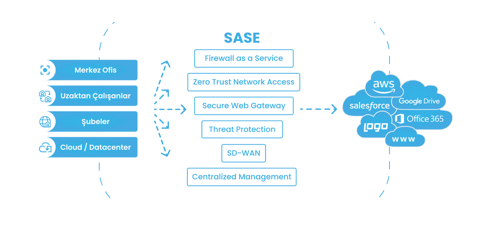

Başarı Hikayelerimiz


*Berqnet Teknik Destek Uzmanları, destek hizmetini iş ortaklarına ücretsiz vermektedir. Berqnet Kullanıcıları teknik destek hizmeti Berqnet Yetkili Çözüm ortakları tarafından verilmektedir.
Henüz Berqnet SASE Platformunu Yakından Tanımadıysanız, Anlatmaya Hazırız!
SASE Nedir?
SD-WAN, Sıfır Güven Yaklaşımı (ZTNA), Güvenli İnternet Erişimi ve Merkezi Yönetim özelliklerinin bir araya gelmesiyle oluşan SASE platformu, BT operasyonlarındaki verimliliğ maksimum seviyeye çıkarmak için siber güvenlik ve ağ yönetim süreçlerinin geldiği son noktadır.
Berqnet SASE'nin İşletmenize Faydaları
Berqnet SASE ile BT operasyonlarındaki verimliliğinizi %40 artırırsınız.
Güvenlik
Tüm noktaların internet erişimi merkezi bir platformdan sağlanabilmektedir. Firewall, Web filtre, IPS, Gateway Antivirus gibi güvenlik servislerinden tutarlı bir şekilde faydalanılmaktadır. Bu sayede kurum ağı siber saldırılara ve zararlı yazılımlara karşı koruma altına alınır.
Yönetim
Tüm sistemin yönetimi merkezi bir arayüzden yapılmaktadır. Şube ağlarınızın kurulum ve yönetim süreçlerini otomatikleştirerek tüm süreçleri tek bir ekrandan takip edip her aşamayı Berqnet yapay zekası desteğiyle kusursuz bir şekilde inşa edebilirsiniz.
İzleme
Berqnet SASE ile ağ yönetiminizi tek bir platformdan rahatlıkla izleyebilirsiniz. Kayıtlar, KVKK ve 5651 Sayılı Kanun'a uygun şekilde merkezi olarak tutulur, kayıtların doğruluğu yasal olarak onaylanmış zaman damgalarıyla garanti altına alınır.
SASE Platformunun İş Süreçlerinizi Kolaylaştıran Bileşenleri
Güvenli İnternet Erişimi
Tüm şube ve kullanıcıların internet erişimi merkezi bir noktadan sağlanabilmektedir. Tüm kaynak ve hedefler Firewall, Web filtre, IPS, Gateway Antivirus gibi güvenlik servislerinden tutarlı bir şekilde faydalanmaktadır. Bu sayede kurum ağı siber saldırılara ve zararlı yazılımlara karşı koruma altına alınır.
SD-WAN
SD-WAN yaklaşımı internet hatlarının kullanımını optimize etmek için ortaya çıkmıştır. MPLS çözümleri yerine standart internet hatlarını güvenli ve verimli kullanmak üzere tasarlanmış bir ağ çözümüdür. Çok şubeli yapılarda şubelerin birbirleriyle güvenli şekilde bağlanmasını sağlayan SD-WAN teknolojisini yakından tanıyın.
Sıfır Güven Yaklaşımı (ZTNA)
Bir kurum ağının gerçek anlamda güvenli olarak tanımlanabilmesi için kullanıcıların ve cihazların ağa erişim izni verilmeden önce çeşitli açılardan doğrulanmaları gereklidir. Daha güvenli bir süreç inşa etmek için ZTNA'i daha yakından tanıyın.
Merkezi Yönetim
Tüm sistemin yönetimi ve izlenmesi merkezi bir arayüzden yapılmaktadır. Yasal kayıt tutma özelliği sayesinde kurum ağındaki tüm internet kullanım kayıtları 5651 sayılı Kanun'a uygun şekilde merkezi olarak tutulur, kayıtların doğruluğu yasal olarak onaylanmış zaman damgalarıyla garanti altına alınır.
Ödüllü Siber Güvenlik Markası Berqnet
Başarı Hikayelerimiz
*Berqnet Teknik Destek Uzmanları, destek hizmetini iş ortaklarına ücretsiz vermektedir. Berqnet Kullanıcıları teknik destek hizmeti Berqnet Yetkili Çözüm ortakları tarafından verilmektedir.